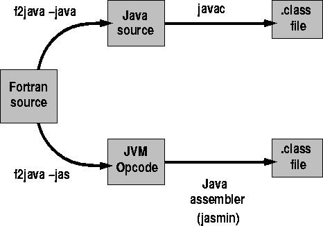

Next:
Synopsis
Up:
JLAPACK-Compiling LAPACK FORTRAN to
Previous:
Jasmin opcode
Using the f2j compiler

Figure 2:
Translation strategies in the f2j project
Synopsis
Keith Seymour
Wed Jun 10 19:38:14 EDT 1998